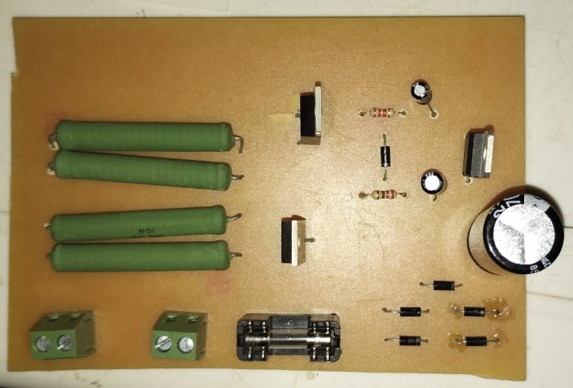
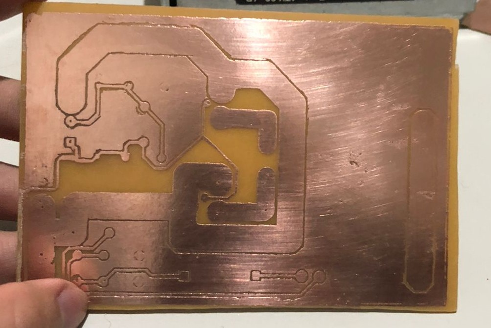
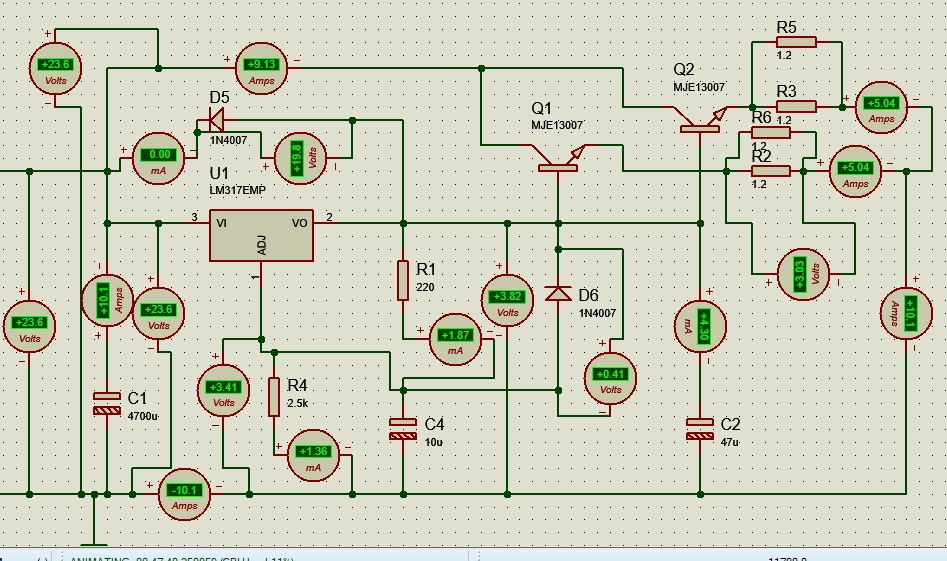

A geração de um valor maior que 1 A em eletrônica tende a ser um desafio devido ao fato dos componentes básicos de um circuito eletrônico não demandarem tanto fluxo de carga. Sendo assim, foram realizados esforços na compreensão de reguladores de tensão e transistores. Além disso, foram utilizados outros elementos básicos em eletrônica, por exemplo, fonte de tensão, resistores e capacitores, esse último atuou como filtro de rede. Após as atividades desenvolvidas ao longo do projeto, a execução foi dada como insucedida. Por consequência de equívocos no momento de simulação e o indevido dimensionamento dos componentes, o circuito final foi ativado, porém com uma saída constante apenas de 3.85 A. Para que isso fosse possível, foi necessário utilizar uma fonte DC e inutilizar a ponte retificadora. A alta corrente de entrada impossibilita a atuação dos elementos passivos e sobrecarrega o transformador e demais aparatos de condução.
Esse foi a versão final do projeto   